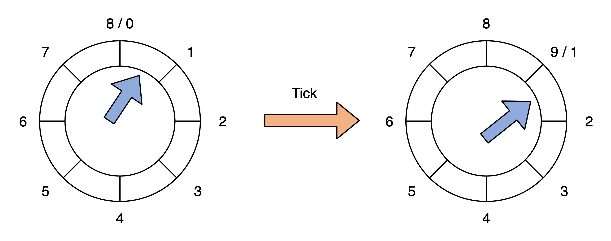
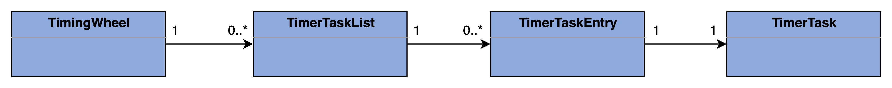
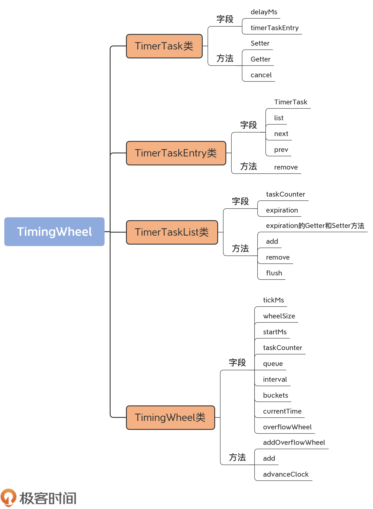

- 00 导读 构建Kafka工程和源码阅读环境、Scala语言热身.md
- 00 开篇词 阅读源码，逐渐成了职业进阶道路上的“必选项”.md
- 00 重磅加餐 带你快速入门Scala语言.md
- 01 日志段：保存消息文件的对象是怎么实现的？.md
- 02 日志（上）：日志究竟是如何加载日志段的？.md
- 03 日志（下）：彻底搞懂Log对象的常见操作.md
- 04 索引（上）：改进的二分查找算法在Kafka索引的应用.md
- 05 索引（下）：位移索引和时间戳索引的区别是什么？.md
- 06 请求通道：如何实现Kafka请求队列？.md
- 07 SocketServer（上）：Kafka到底是怎么应用NIO实现网络通信的？.md
- 08 SocketServer（中）：请求还要区分优先级？.md
- 09 SocketServer（下）：请求处理全流程源码分析.md
- 10 KafkaApis：Kafka最重要的源码入口，没有之一.md
- 11 Controller元数据：Controller都保存有哪些东西？有几种状态？.md
- 12 ControllerChannelManager：Controller如何管理请求发送？.md
- 13 ControllerEventManager：变身单线程后的Controller如何处理事件？.md
- 14 Controller选举是怎么实现的？.md
- 15 如何理解Controller在Kafka集群中的作用？.md
- 16 TopicDeletionManager： Topic是怎么被删除的？.md
- 17 ReplicaStateMachine：揭秘副本状态机实现原理.md
- 18 PartitionStateMachine：分区状态转换如何实现？.md
- 19 TimingWheel：探究Kafka定时器背后的高效时间轮算法.md
- 20 DelayedOperation：Broker是怎么延时处理请求的？.md
- 21 AbstractFetcherThread：拉取消息分几步？.md
- 22 ReplicaFetcherThread：Follower如何拉取Leader消息？.md
- 23 ReplicaManager（上）：必须要掌握的副本管理类定义和核心字段.md
- 24 ReplicaManager（中）：副本管理器是如何读写副本的？.md
- 25 ReplicaManager（下）：副本管理器是如何管理副本的？.md
- 26 MetadataCache：Broker是怎么异步更新元数据缓存的？.md
- 27 消费者组元数据（上）：消费者组都有哪些元数据？.md
- 28 消费者组元数据（下）：Kafka如何管理这些元数据？.md
- 29 GroupMetadataManager：组元数据管理器是个什么东西？.md
- 30 GroupMetadataManager：位移主题保存的只是位移吗？.md
- 31 GroupMetadataManager：查询位移时，不用读取位移主题？.md
- 32 GroupCoordinator：在Rebalance中，Coordinator如何处理成员入组？.md
- 33 GroupCoordinator：在Rebalance中，如何进行组同步？.md
- 特别放送（一）经典的Kafka学习资料有哪些？.md
- 特别放送（三）我是怎么度过日常一天的？.md
- 特别放送（二）一篇文章带你了解参与开源社区的全部流程.md
- 特别放送（五） Kafka 社区的重磅功能：移除 ZooKeeper 依赖.md
- 特别放送（四）20道经典的Kafka面试题详解.md
- 结束语 源码学习，我们才刚上路呢.md
19 TimingWheel：探究Kafka定时器背后的高效时间轮算法
你好，我是胡夕。今天，我们开始学习Kafka延时请求的代码实现。
延时请求（Delayed Operation），也称延迟请求，是指因未满足条件而暂时无法被处理的Kafka请求。举个例子，配置了acks=all的生产者发送的请求可能一时无法完成，因为Kafka必须确保ISR中的所有副本都要成功响应这次写入。因此，通常情况下，这些请求没法被立即处理。只有满足了条件或发生了超时，Kafka才会把该请求标记为完成状态。这就是所谓的延时请求。
今天，我们的重点是弄明白请求被延时处理的机制——分层时间轮算法。
时间轮的应用范围非常广。很多操作系统的定时任务调度（如Crontab）以及通信框架（如Netty等）都利用了时间轮的思想。几乎所有的时间任务调度系统都是基于时间轮算法的。Kafka应用基于时间轮算法管理延迟请求的代码简洁精炼，而且和业务逻辑代码完全解耦，你可以从0到1地照搬到你自己的项目工程中。
时间轮简介
在开始介绍时间轮之前，我想先请你思考这样一个问题：“如果是你，你会怎么实现Kafka中的延时请求呢？”
针对这个问题，我的第一反应是使用Java的DelayQueue。毕竟，这个类是Java天然提供的延时队列，非常适合建模延时对象处理。实际上，Kafka的第一版延时请求就是使用DelayQueue做的。
但是，DelayQueue有一个弊端：它插入和删除队列元素的时间复杂度是O(logN)。对于Kafka这种非常容易积攒几十万个延时请求的场景来说，该数据结构的性能是瓶颈。当然，这一版的设计还有其他弊端，比如，它在清除已过期的延迟请求方面不够高效，可能会出现内存溢出的情形。后来，社区改造了延时请求的实现机制，采用了基于时间轮的方案。
时间轮有简单时间轮（Simple Timing Wheel）和分层时间轮（Hierarchical Timing Wheel）两类。两者各有利弊，也都有各自的使用场景。Kafka采用的是分层时间轮，这是我们重点学习的内容。
关于分层时间轮，有很多严谨的科学论文。不过，大多数的论文读起来晦涩难懂，而且偏理论研究。然而，我们并非是要完整系统地学习这套机制，我们关心的是如何将其应用于实践当中。要做到这一点，结合着源码来学习就是一个不错的途径。你需要关注，在代码层面，Kafka是如何实现多层时间轮的。
“时间轮”的概念稍微有点抽象，我用一个生活中的例子，来帮助你建立一些初始印象。
想想我们生活中的手表。手表由时针、分针和秒针组成，它们各自有独立的刻度，但又彼此相关：秒针转动一圈，分针会向前推进一格；分针转动一圈，时针会向前推进一格。这就是典型的分层时间轮。
和手表不太一样的是，Kafka自己有专门的术语。在Kafka中，手表中的“一格”叫“一个桶（Bucket）”，而“推进”对应于Kafka中的“滴答”，也就是tick。后面你在阅读源码的时候，会频繁地看到Bucket、tick字眼，你可以把它们理解成手表刻度盘面上的“一格”和“向前推进”的意思。
除此之外，每个Bucket下也不是白板一块，它实际上是一个双向循环链表（Doubly Linked Cyclic List），里面保存了一组延时请求。
我先用一张图帮你理解下双向循环链表。
图中的每个节点都有一个next和prev指针，分别指向下一个元素和上一个元素。Root是链表的头部节点，不包含任何实际数据。它的next指针指向链表的第一个元素，而prev指针指向最后一个元素。
由于是双向链表结构，因此，代码能够利用next和prev两个指针快速地定位元素，因此，在Bucket下插入和删除一个元素的时间复杂度是O(1)。当然，双向链表要求同时保存两个指针数据，在节省时间的同时消耗了更多的空间。在算法领域，这是典型的用空间去换时间的优化思想。
源码层级关系
在Kafka中，具体是怎么应用分层时间轮实现请求队列的呢？

图中的时间轮共有两个层级，分别是Level 0和Level 1。每个时间轮有8个Bucket，每个Bucket下是一个双向循环链表，用来保存延迟请求。
在Kafka源码中，时间轮对应utils.timer包下的TimingWheel类，每个Bucket下的链表对应TimerTaskList类，链表元素对应TimerTaskEntry类，而每个链表元素里面保存的延时任务对应TimerTask。
在这些类中，TimerTaskEntry与TimerTask是1对1的关系，TimerTaskList下包含多个TimerTaskEntry，TimingWheel包含多个TimerTaskList。
我画了一张UML图，帮助你理解这些类之间的对应关系：

时间轮各个类源码定义
掌握了这些基础知识，下面我就结合这些源码，来解释下延迟请求是如何被这套分层时间轮管理的。根据调用关系，我采用自底向上的方法给出它们的定义。
TimerTask类
首先是TimerTask类。该类位于utils.timer包下的TimerTask.scala文件中。它的代码只有几十行，非常容易理解。
trait TimerTask extends Runnable {
val delayMs: Long // 通常是request.timeout.ms参数值
// 每个TimerTask实例关联一个TimerTaskEntry
// 就是说每个定时任务需要知道它在哪个Bucket链表下的哪个链表元素上
private[this] var timerTaskEntry: TimerTaskEntry = null
// 取消定时任务，原理就是将关联的timerTaskEntry置空
def cancel(): Unit = {
synchronized {
if (timerTaskEntry != null) timerTaskEntry.remove()
timerTaskEntry = null
}
}
// 关联timerTaskEntry，原理是给timerTaskEntry字段赋值
private[timer] def setTimerTaskEntry(entry: TimerTaskEntry)
: Unit = {
synchronized {
if (timerTaskEntry != null && timerTaskEntry != entry)
timerTaskEntry.remove()
timerTaskEntry = entry
}
}
// 获取关联的timerTaskEntry实例
private[timer] def getTimerTaskEntry(): TimerTaskEntry = {
timerTaskEntry
}
}
从代码可知，TimerTask是一个Scala接口（Trait）。每个TimerTask都有一个delayMs字段，表示这个定时任务的超时时间。通常来说，这就是客户端参数request.timeout.ms的值。这个类还绑定了一个timerTaskEntry字段，因为，每个定时任务都要知道，它存放在哪个Bucket链表下的哪个链表元素上。
既然绑定了这个字段，就要提供相应的Setter和Getter方法。Getter方法仅仅是返回这个字段而已，Setter方法要稍微复杂一些。在给timerTaskEntry赋值之前，它必须要先考虑这个定时任务是否已经绑定了其他的timerTaskEntry，如果是的话，就必须先取消绑定。另外，Setter的整个方法体必须由monitor锁保护起来，以保证线程安全性。
这个类还有个cancel方法，用于取消定时任务。原理也很简单，就是将关联的timerTaskEntry置空。也就是说，把定时任务从链表上摘除。
总之，TimerTask建模的是Kafka中的定时任务。接下来，我们来看TimerTaskEntry是如何承载这个定时任务的，以及如何在链表中实现双向关联。
TimerTaskEntry类
如前所述，TimerTaskEntry表征的是Bucket链表下的一个元素。它的主要代码如下：
private[timer] class TimerTaskEntry(val timerTask: TimerTask, val expirationMs: Long) extends Ordered[TimerTaskEntry] {
@volatile
var list: TimerTaskList = null // 绑定的Bucket链表实例
var next: TimerTaskEntry = null // next指针
var prev: TimerTaskEntry = null // prev指针
// 关联给定的定时任务
if (timerTask != null) timerTask.setTimerTaskEntry(this)
// 关联定时任务是否已经被取消了
def cancelled: Boolean = {
timerTask.getTimerTaskEntry != this
}
// 从Bucket链表中移除自己
def remove(): Unit = {
var currentList = list
while (currentList != null) {
currentList.remove(this)
currentList = list
}
}
......
}
该类定义了TimerTask类字段，用来指定定时任务，同时还封装了一个过期时间戳字段，这个字段值定义了定时任务的过期时间。
举个例子，假设有个PRODUCE请求在当前时间1点钟被发送到Broker，超时时间是30秒，那么，该请求必须在1点30秒之前完成，否则将被视为超时。这里的1点30秒，就是expirationMs值。
除了TimerTask类字段，该类还定义了3个字段：list、next和prev。它们分别对应于Bucket链表实例以及自身的next、prev指针。注意，list字段是volatile型的，这是因为，Kafka的延时请求可能会被其他线程从一个链表搬移到另一个链表中，因此，为了保证必要的内存可见性，代码声明list为volatile。
该类的方法代码都很直观，你可以看下我写的代码注释。这里我重点解释一下remove方法的实现原理。
remove的逻辑是将TimerTask自身从双向链表中移除掉，因此，代码调用了TimerTaskList的remove方法来做这件事。那这里就有一个问题：“怎么算真正移除掉呢？”其实，这是根据“TimerTaskEntry的list是否为空”来判断的。一旦置空了该字段，那么，这个TimerTaskEntry实例就变成了“孤儿”，不再属于任何一个链表了。从这个角度来看，置空就相当于移除的效果。
需要注意的是，置空这个动作是在TimerTaskList的remove中完成的，而这个方法可能会被其他线程同时调用，因此，上段代码使用了while循环的方式来确保TimerTaskEntry的list字段确实被置空了。这样，Kafka才能安全地认为此链表元素被成功移除。
TimerTaskList类
说完了TimerTask和TimerTaskEntry，就轮到链表类TimerTaskList上场了。我们先看它的定义：
private[timer] class TimerTaskList(taskCounter: AtomicInteger) extends Delayed {
private[this] val root = new TimerTaskEntry(null, -1)
root.next = root
root.prev = root
private[this] val expiration = new AtomicLong(-1L)
......
}
TimerTaskList实现了刚刚那张图所展示的双向循环链表。它定义了一个Root节点，同时还定义了两个字段：
- taskCounter，用于标识当前这个链表中的总定时任务数；
- expiration，表示这个链表所在Bucket的过期时间戳。
就像我前面说的，每个Bucket对应于手表表盘上的一格。它有起始时间和结束时间，因而也就有时间间隔的概念，即“结束时间-起始时间=时间间隔”。同一层的Bucket的时间间隔都是一样的。只有当前时间越过了Bucket的起始时间，这个Bucket才算是过期。而这里的起始时间，就是代码中expiration字段的值。
除了定义的字段之外，TimerTaskList类还定义一些重要的方法，比如expiration的Getter和Setter方法、add、remove和flush方法。
我们先看expiration的Getter和Setter方法。
// Setter方法
def setExpiration(expirationMs: Long): Boolean = {
expiration.getAndSet(expirationMs) != expirationMs
}
// Getter方法
def getExpiration(): Long = {
expiration.get()
}
我重点解释下Setter方法。代码使用了AtomicLong的CAS方法getAndSet原子性地设置了过期时间戳，之后将新过期时间戳和旧值进行比较，看看是否不同，然后返回结果。
这里为什么要比较新旧值是否不同呢？这是因为，目前Kafka使用一个DelayQueue统一管理所有的Bucket，也就是TimerTaskList对象。随着时钟不断向前推进，原有Bucket会不断地过期，然后失效。当这些Bucket失效后，源码会重用这些Bucket。重用的方式就是重新设置Bucket的过期时间，并把它们加回到DelayQueue中。这里进行比较的目的，就是用来判断这个Bucket是否要被插入到DelayQueue。
此外，TimerTaskList类还提供了add和remove方法，分别实现将给定定时任务插入到链表、从链表中移除定时任务的逻辑。这两个方法的主体代码基本上就是我们在数据结构课上学过的链表元素插入和删除操作，所以这里我就不具体展开讲了。你可以将这些代码和数据结构书中的代码比对下，看看它们是不是长得很像。
// add方法
def add(timerTaskEntry: TimerTaskEntry): Unit = {
var done = false
while (!done) {
// 在添加之前尝试移除该定时任务，保证该任务没有在其他链表中
timerTaskEntry.remove()
synchronized {
timerTaskEntry.synchronized {
if (timerTaskEntry.list == null) {
val tail = root.prev
timerTaskEntry.next = root
timerTaskEntry.prev = tail
timerTaskEntry.list = this
// 把timerTaskEntry添加到链表末尾
tail.next = timerTaskEntry
root.prev = timerTaskEntry
taskCounter.incrementAndGet()
done = true
}
}
}
}
}
// remove方法
def remove(timerTaskEntry: TimerTaskEntry): Unit = {
synchronized {
timerTaskEntry.synchronized {
if (timerTaskEntry.list eq this) {
timerTaskEntry.next.prev = timerTaskEntry.prev
timerTaskEntry.prev.next = timerTaskEntry.next
timerTaskEntry.next = null
timerTaskEntry.prev = null
timerTaskEntry.list = null
taskCounter.decrementAndGet()
}
}
}
}
最后，我们看看flush方法。它的代码如下：
def flush(f: (TimerTaskEntry)=>Unit): Unit = {
synchronized {
// 找到链表第一个元素
var head = root.next
// 开始遍历链表
while (head ne root) {
// 移除遍历到的链表元素
remove(head)
// 执行传入参数f的逻辑
f(head)
head = root.next
}
// 清空过期时间设置
expiration.set(-1L)
}
}
基本上，flush方法是清空链表中的所有元素，并对每个元素执行指定的逻辑。该方法用于将高层次时间轮Bucket上的定时任务重新插入回低层次的Bucket中。具体为什么要这么做，下节课我会给出答案，现在你只需要知道它的大致作用就可以了。
TimingWheel类
最后，我们再来看下TimingWheel类的代码。先看定义：
private[timer] class TimingWheel(
tickMs: Long, wheelSize: Int,
startMs: Long, taskCounter: AtomicInteger,
queue: DelayQueue[TimerTaskList]) {
private[this] val interval = tickMs * wheelSize
private[this] val buckets = Array.tabulate[TimerTaskList](wheelSize) { _ => new TimerTaskList(taskCounter) }
private[this] var currentTime = startMs - (startMs % tickMs)
@volatile private[this] var overflowWheel: TimingWheel = null
......
}
每个TimingWheel对象都定义了9个字段。这9个字段都非常重要，每个字段都是分层时间轮的重要属性。因此，我来逐一介绍下。
- tickMs：滴答一次的时长，类似于手表的例子中向前推进一格的时间。对于秒针而言，tickMs就是1秒。同理，分针是1分，时针是1小时。在Kafka中，第1层时间轮的tickMs被固定为1毫秒，也就是说，向前推进一格Bucket的时长是1毫秒。
- wheelSize：每一层时间轮上的Bucket数量。第1层的Bucket数量是20。
- startMs：时间轮对象被创建时的起始时间戳。
- taskCounter：这一层时间轮上的总定时任务数。
- queue：将所有Bucket按照过期时间排序的延迟队列。随着时间不断向前推进，Kafka需要依靠这个队列获取那些已过期的Bucket，并清除它们。
- interval：这层时间轮总时长，等于滴答时长乘以wheelSize。以第1层为例，interval就是20毫秒。由于下一层时间轮的滴答时长就是上一层的总时长，因此，第2层的滴答时长就是20毫秒，总时长是400毫秒，以此类推。
- buckets：时间轮下的所有Bucket对象，也就是所有TimerTaskList对象。
- currentTime：当前时间戳，只是源码对它进行了一些微调整，将它设置成小于当前时间的最大滴答时长的整数倍。举个例子，假设滴答时长是20毫秒，当前时间戳是123毫秒，那么，currentTime会被调整为120毫秒。
- overflowWheel：Kafka是按需创建上层时间轮的。这也就是说，当有新的定时任务到达时，会尝试将其放入第1层时间轮。如果第1层的interval无法容纳定时任务的超时时间，就现场创建并配置好第2层时间轮，并再次尝试放入，如果依然无法容纳，那么，就再创建和配置第3层时间轮，以此类推，直到找到适合容纳该定时任务的第N层时间轮。
由于每层时间轮的长度都是倍增的，因此，代码并不需要创建太多层的时间轮，就足以容纳绝大部分的延时请求了。
举个例子，目前Clients端默认的请求超时时间是30秒，按照现在代码中的wheelSize=20进行倍增，只需要4层时间轮，就能容纳160秒以内的所有延时请求了。
说完了类声明，我们再来学习下TimingWheel中定义的3个方法：addOverflowWheel、add和advanceClock。就像我前面说的，TimingWheel类字段overflowWheel的创建是按需的。每当需要一个新的上层时间轮时，代码就会调用addOverflowWheel方法。我们看下它的代码：
private[this] def addOverflowWheel(): Unit = {
synchronized {
// 只有之前没有创建上层时间轮方法才会继续
if (overflowWheel == null) {
// 创建新的TimingWheel实例
// 滴答时长tickMs等于下层时间轮总时长
// 每层的轮子数都是相同的
overflowWheel = new TimingWheel(
tickMs = interval,
wheelSize = wheelSize,
startMs = currentTime,
taskCounter = taskCounter,
queue
)
}
}
}
这个方法就是创建一个新的TimingWheel实例，也就是创建上层时间轮。所用的滴答时长等于下层时间轮总时长，而每层的轮子数都是相同的。创建完成之后，代码将新创建的实例赋值给overflowWheel字段。至此，方法结束。
下面，我们再来学习下add和advanceClock方法。首先是add方法，代码及其注释如下：
def add(timerTaskEntry: TimerTaskEntry): Boolean = {
// 获取定时任务的过期时间戳
val expiration = timerTaskEntry.expirationMs
// 如果该任务已然被取消了，则无需添加，直接返回
if (timerTaskEntry.cancelled) {
false
// 如果该任务超时时间已过期
} else if (expiration < currentTime + tickMs) {
false
// 如果该任务超时时间在本层时间轮覆盖时间范围内
} else if (expiration < currentTime + interval) {
val virtualId = expiration / tickMs
// 计算要被放入到哪个Bucket中
val bucket = buckets((virtualId % wheelSize.toLong).toInt)
// 添加到Bucket中
bucket.add(timerTaskEntry)
// 设置Bucket过期时间
// 如果该时间变更过，说明Bucket是新建或被重用，将其加回到DelayQueue
if (bucket.setExpiration(virtualId * tickMs)) {
queue.offer(bucket)
}
true
// 本层时间轮无法容纳该任务，交由上层时间轮处理
} else {
// 按需创建上层时间轮
if (overflowWheel == null) addOverflowWheel()
// 加入到上层时间轮中
overflowWheel.add(timerTaskEntry)
}
}
我结合一张图来解释下这个add方法要做的事情：
方法的第1步是获取定时任务的过期时间戳。所谓过期时间戳，就是这个定时任务过期时的时点。
第2步是看定时任务是否已被取消。如果已经被取消，则无需加入到时间轮中。如果没有被取消，就接着看这个定时任务是否已经过期。如果过期了，自然也不用加入到时间轮中。如果没有过期，就看这个定时任务的过期时间是否能够被涵盖在本层时间轮的时间范围内。如果可以，则进入到下一步。
第3步，首先计算目标Bucket序号，也就是这个定时任务需要被保存在哪个TimerTaskList中。我举个实际的例子，来说明一下如何计算目标Bucket。
前面说过了，第1层的时间轮有20个Bucket，每个滴答时长是1毫秒。那么，第2层时间轮的滴答时长应该就是20毫秒，总时长是400毫秒。第2层第1个Bucket的时间范围应该是[20，40)，第2个Bucket的时间范围是[40，60），依次类推。假设现在有个延时请求的超时时间戳是237，那么，它就应该被插入到第11个Bucket中。
在确定了目标Bucket序号之后，代码会将该定时任务添加到这个Bucket下，同时更新这个Bucket的过期时间戳。在刚刚的那个例子中，第11号Bucket的起始时间就应该是小于237的最大的20的倍数，即220。
第4步，如果这个Bucket是首次插入定时任务，那么，还同时要将这个Bucket加入到DelayQueue中，方便Kafka轻松地获取那些已过期Bucket，并删除它们。如果定时任务的过期时间无法被涵盖在本层时间轮中，那么，就按需创建上一层时间戳，然后在上一层时间轮上完整地执行刚刚所说的所有逻辑。
说完了add方法，我们看下advanceClock方法。顾名思义，它就是向前驱动时钟的方法。代码如下：
def advanceClock(timeMs: Long): Unit = {
// 向前驱动到的时点要超过Bucket的时间范围，才是有意义的推进，否则什么都不做
// 更新当前时间currentTime到下一个Bucket的起始时点
if (timeMs >= currentTime + tickMs) {
currentTime = timeMs - (timeMs % tickMs)
// 同时尝试为上一层时间轮做向前推进动作
if (overflowWheel != null) overflowWheel.advanceClock(currentTime)
}
}
参数timeMs表示要把时钟向前推动到这个时点。向前驱动到的时点必须要超过Bucket的时间范围，才是有意义的推进，否则什么都不做，毕竟它还在Bucket时间范围内。
相反，一旦超过了Bucket覆盖的时间范围，代码就会更新当前时间currentTime到下一个Bucket的起始时点，同时递归地为上一层时间轮做向前推进动作。推进时钟的动作是由Kafka后台专属的Reaper线程发起的。
今天，我反复提到了删除过期Bucket，这个操作是由这个Reaper线程执行的。下节课，我们会提到这个Reaper线程。
总结
今天，我简要介绍了时间轮机制，并结合代码重点讲解了分层时间轮在Kafka中的代码实现。Kafka正是利用这套分层时间轮机制实现了对于延迟请求的处理。在源码层级上，Kafka定义了4个类来构建整套分层时间轮体系。
- TimerTask类：建模Kafka延时请求。它是一个Runnable类，Kafka使用一个单独线程异步添加延时请求到时间轮。
- TimerTaskEntry类：建模时间轮Bucket下延时请求链表的元素类型，封装了TimerTask对象和定时任务的过期时间戳信息。
- TimerTaskList类：建模时间轮Bucket下的延时请求双向循环链表，提供O(1)时间复杂度的请求插入和删除。
- TimingWheel类：建模时间轮类型，统一管理下辖的所有Bucket以及定时任务。

在下一讲中，我们将继续学习Kafka延时请求，以及管理它们的DelayedOperation家族的源码。只有了解了DelayedOperation及其具体实现子类的代码，我们才能完整地了解，当请求不能被及时处理时，Kafka是如何应对的。
在分布式系统中，如何优雅而高效地延迟处理任务是摆在设计者面前的难题之一。我建议你好好学习下这套实现机制在Kafka中的应用代码，活学活用，将其彻底私有化，加入到你的工具箱中。
课后讨论
TimingWheel类中的overflowWheel变量为什么是volatile型的？
欢迎你在留言区畅所欲言，跟我交流讨论，也欢迎你把今天的内容分享给你的朋友。
© 2019 - 2023 Liangliang Lee. Powered by Vert.x and hexo-theme-book.